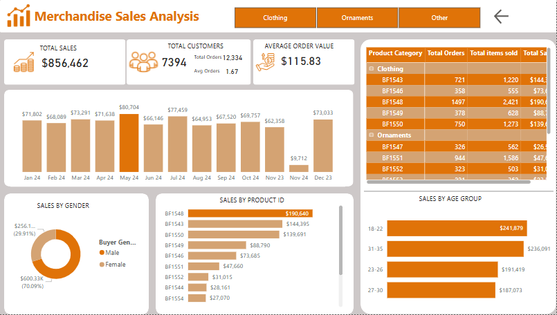
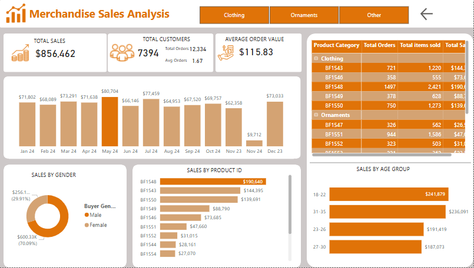
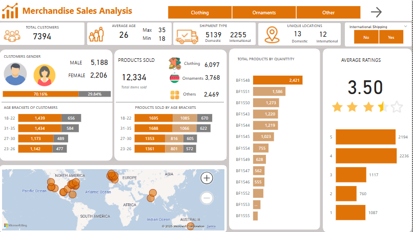
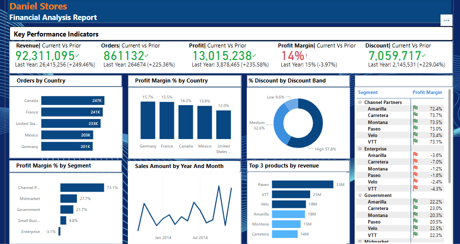
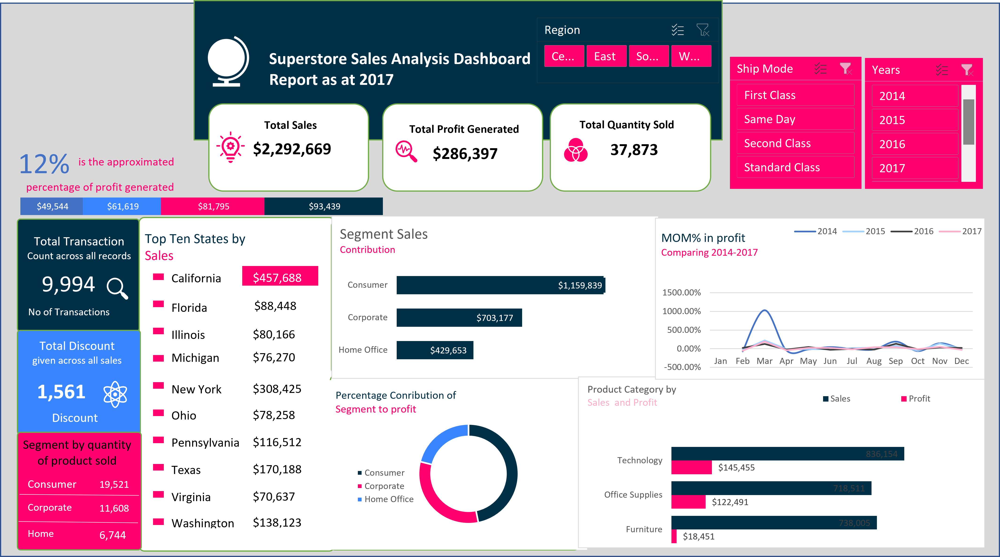

I am a passionate Data Analyst with a background in Accounting, I excel at turning raw data into actionable insights. With expertise in data collection, cleaning, and analysis, I'm adept at uncovering trends and presenting findings in a clear, compelling manner. My attention to detail ensures data accuracy, and my background in accounting adds a unique financial perspective to my analytical skills. I am open to collaborate on impactful data-driven projects!
.
 

This project focuses on optimizing workforce strategy using data-driven insights from HR metrics. By analyzing employee demographics, skills, performance, salaries, and work patterns, the HR dashboard helps identify trends, gaps, and opportunities across departments and locations. The goal is to support strategic decision-making, improve talent management, and enhance employee engagement and retention.

Merchandise Sales Analysis Dashboard
This Power BI project analyzes merchandise sales data to uncover key business insights. It features interactive dashboards that highlight sales performance, top products, customer demographics, geographic trends, and monthly sales patterns. Designed for stakeholders to easily explore data and make informed decisions.

The dashboard was created to analyze and monitor the performance of sales and marketing calls across agents, with a focus on understanding call outcomes, agent effectiveness, and customer engagement. It is designed for operations and team managers to identify key trends, bottlenecks, and areas for performance improvement.

This project involved performing a comprehensive financial analysis for Daniel Stores using Power BI. The primary goal was to examine year-over-year performance, understand revenue and profit drivers, and identify trends across countries, products, and customer segments. Data visualizations were leveraged to draw actionable business insights for strategic decision-making.

.This project presents an in-depth analysis of the Superstore dataset using Excel to uncover key insights on sales, profitability, customer behavior, and regional performance.
Key Objectives:
Identify top-performing product categories and sub-categories,
Analyze sales and profit distribution across customer segments and regions,
Assess the impact of discounts on profitability,
Provide data-driven recommendations for business growth.

This project involves analyzing Adidas sales data from 2020 to 2021 using Power BI to understand regional, gender, product, and channel-based performance. The dashboard was designed to provide insights into sales trends, customer preferences, and transactional data to support strategic business decisions.

This project demonstrates how to perform customer segmentation using SQL and the RFM (Recency, Frequency, Monetary) model. It involves creating a customer dataset, cleaning the data, calculating RFM metrics, and classifying customers into segments such as Best, Loyal, and At Risk. The solution is scalable and supports targeted marketing strategies based on customer behavior.

This project showcases a comprehensive SQL-based analysis of a simulated grocery e-commerce platform, similar to Instacart. It involves designing a relational database schema and executing advanced queries to uncover insights related to product performance, revenue trends, departmental profitability, and customer purchase behavior over time. The analysis helps identify high-revenue products, peak shopping periods, seasonal trends, and operational patterns to support data-driven decision-making.

This project marked my first hands-on experience with Power BI. It involved visualizing and analyzing crime data across Nigeria’s six geo-political zones for the year 2017. The primary focus was on two major categories: Offences Against Persons and Offences Against Lawful Authority. The analysis helped uncover regional crime distribution patterns and state-specific insights.